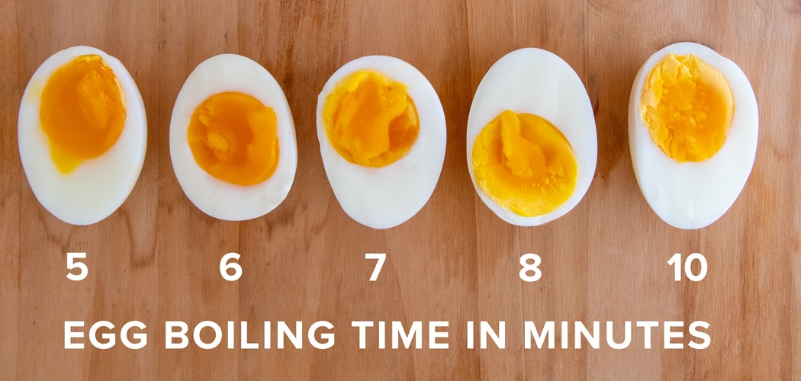

How boiled eggs are made

Place eggs in a medium pot and cover with cold water by 1 inch. Bring to a boil, then cover the pot and turn the heat off. Let the eggs cook, covered, for 9 to 12 minutes, depending on your desired done-ness (see photo). Transfer the eggs to a bowl of ice water and chill for 14 minutes.
INGREDIENTS NEEDED
STEPS
- fill bowl with water
- put eggs in bowl
- Turn the stove on and wait till the water boils
- When the water starts boiling leave the eggs to cook for 20 more minutes
- Take the eggs out, wait for them to cool off and take the shell off the eggs
- add salt
- VIOLA!